Socket Programming (TCP & UDP)
Pertemuan 11
Pendalaman Ekstensif: Client-Server, Socket API, Timeouts, dan Eksekusi Kode Python
Referensi: Bahan Ajar Week11.pptx & RPS Jaringan Komputer
Dosen Pengampu:
Application Layer: Overview
Pembahasan Application Layer mencakup beberapa sub-topik mendasar yang menggerakkan internet:
- Principles of network applications (Prinsip-prinsip)
- Web and HTTP
- E-mail, SMTP, IMAP
- The Domain Name System (DNS)
- P2P applications
- Video streaming and CDNs
- Socket programming with UDP and TCP - Fokus Pertemuan Ini
Paradigma Layanan: Client-Server
Hampir sebagian besar layanan internet dikonstruksi menggunakan paradigma Client-Server.
- Server: Program yang berjalan tanpa henti (infinite loop) di mesin remote. Selalu "membuka pintu" mendengarkan request dari jaringan.
- Client: Program yang berjalan di mesin lokal pengguna. Berjalan secara terbatas (finite). Hidup saat mengirim request dan ditutup setelah request terjawab.

Paradigma Layanan: Peer-to-Peer (P2P)
Berbeda dengan arsitektur tersentralisasi, P2P tidak mengandalkan server utama yang selalu menyala.
- Setiap perangkat dalam jaringan (Peer) bertindak ganda: sebagai Client sekaligus Server.
- Sangat efisien untuk distribusi file berukuran raksasa (misal: BitTorrent).
- Tidak ada batasan skalabilitas akibat bottleneck di satu server sentral.

Apa itu Socket?
Goal Utama: Mempelajari bagaimana membangun aplikasi klien dan server yang berkomunikasi melalui jaringan.
Definisi: Socket adalah sebuah Pintu (Door) atau titik akhir komunikasi antara proses aplikasi di user-space dengan protokol transport end-to-end di kernel OS (Operating System).
Proses aplikasi menjejalkan pesan ke luar pintu (Socket), dengan asumsi bahwa infrastruktur di balik pintu tersebut akan mengirimkannya ke Socket tujuan dengan selamat.

Kontrol Socket
Siapa yang mengontrol Socket?
- Bagian atas pintu (Application layer): Dikendalikan penuh oleh App Developer. Kita bebas memilih bahasa pemrograman (Python, Java, C).
- Bagian bawah pintu (Transport layer & ke bawah): Dikendalikan sepenuhnya oleh Sistem Operasi.
Aplikasi butuh memesan (request) sepasang socket ke OS. Satu untuk Client, satu untuk Server.

Dua Tipe Socket Transport
Sistem Operasi menyediakan dua jenis transport service utama yang menentukan tipe Socket:
- UDP (User Datagram Protocol): Komunikasi unreliable, berbasis Datagram (terpotong-potong dan independen). Cepat, tapi tidak menjamin paket sampai atau berurutan.
- TCP (Transmission Control Protocol): Komunikasi reliable, berbasis byte-stream. Menjamin paket sampai secara utuh, berurutan, dan tanpa duplikasi.

Contoh Aplikasi (Uppercase Server)
Untuk mendemonstrasikan kedua tipe Socket, kita akan membangun aplikasi sederhana dengan alur:
- Klien membaca satu baris kalimat huruf kecil dari keyboard.
- Klien mengirimkannya ke Server.
- Server menerima data, dan mengonversinya menjadi HURUF KAPITAL (Uppercase).
- Server mengirim balik data modifikasi tersebut ke Klien.
- Klien menerima balasan dan menampilkannya ke layar komputer.
Socket Programming dengan UDP
Pada UDP, TIDAK ADA KONEKSI yang dibangun antara Klien dan Server sebelum transmisi data (No handshaking).
- Pengirim secara eksplisit harus menempelkan Alamat IP dan Nomor Port tujuan pada setiap paket datagram yang dikirim.
- Penerima harus mengekstrak Alamat IP dan Nomor Port pengirim dari paket yang datang untuk bisa membalas.
- Resiko: Data bisa hilang di jalan (packet loss) atau tiba tidak berurutan.
Interaksi Client/Server: UDP
Alur siklus hidup Socket UDP:
- Server: Membuat socket dan mengikatnya (bind) ke port tertentu. Menunggu paket datang.
- Client: Membuat socket. Membuat paket datagram berisi alamat IP/Port Server tujuan. Mengirim paket.
- Server: Menerima datagram. Membaca request, merangkai balasan, mengirim balik ke IP/Port Klien (didapat dari header paket).
- Client: Menerima balasan, dan menutup socket.
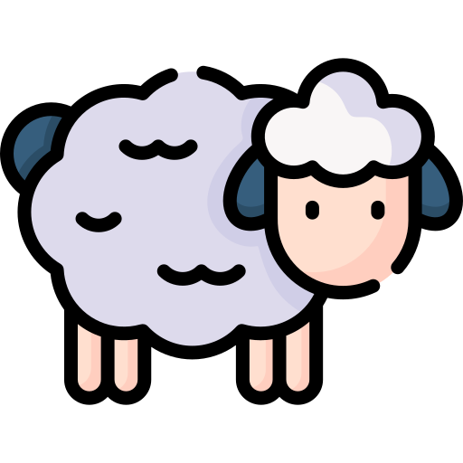
Bedah Kode: UDP Client (Python 3)
from socket import *
serverName = 'hostname_atau_IP'
serverPort = 12000
# 1. Membuat UDP Socket (SOCK_DGRAM)
clientSocket = socket(AF_INET, SOCK_DGRAM)
message = input('Input lowercase sentence:')
# 2. Mengirim data beserta tujuan (serverName, Port)
clientSocket.sendto(message.encode(), (serverName, serverPort))
# 3. Menunggu balasan (recvfrom membaca data & alamat pengirim)
modifiedMessage, serverAddress = clientSocket.recvfrom(2048)
print(modifiedMessage.decode())
# 4. Tutup socket
clientSocket.close()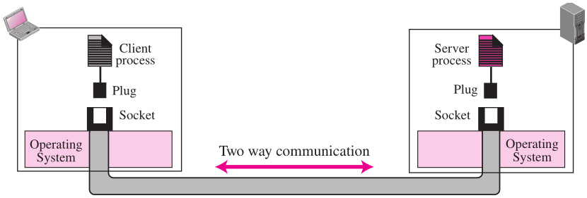
Bedah Kode: UDP Server (Python 3)
from socket import *
serverPort = 12000
serverSocket = socket(AF_INET, SOCK_DGRAM)
# 1. Mengikat (Bind) socket ke local port 12000
serverSocket.bind(('', serverPort))
print('The server is ready to receive')
# 2. Infinite Loop untuk melayani request tiada henti
while True:
# Menerima request dan menyimpan alamat IP Klien
message, clientAddress = serverSocket.recvfrom(2048)
modifiedMessage = message.decode().upper()
# Mengirim balasan ke IP Klien spesifik tersebut
serverSocket.sendto(modifiedMessage.encode(), clientAddress)Socket Programming dengan TCP
TCP bekerja bagaikan sambungan telepon. Harus diangkat (dihubungkan) terlebih dahulu sebelum bisa bicara.
- Server harus menyala lebih dulu dan membuat Welcoming Socket (pintu penerima tamu).
- Klien mengontak Server dengan membuat TCP Socket dan memanggil perintah Connect.
- TCP membangun koneksi 3-way handshake.
- Setelah terkoneksi, TCP membentuk "Pipa" streaming virtual di mana byte bisa mengalir secara terurut dan reliabel.
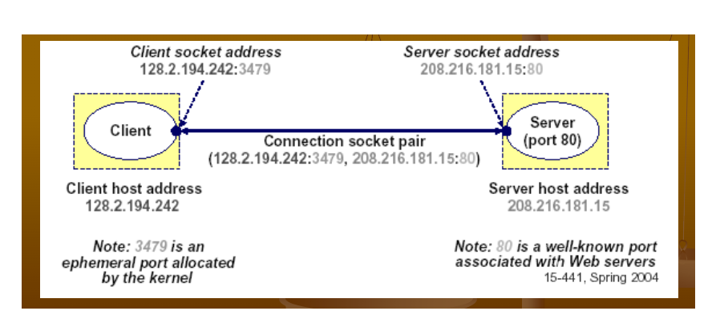
Konsep Welcoming vs Connection Socket
Ada perbedaan mendasar di sisi Server pada TCP:
- Server memiliki 1 Welcoming Socket (misal di Port 80) yang tugasnya HANYA mendengarkan ketukan pintu klien baru.
- Ketika Klien "mengetuk", Server akan memanggil perintah
accept(). - Perintah
accept()akan mencetak Socket Baru (Connection Socket) yang didedikasikan KHUSUS untuk berbicara 1-on-1 dengan Klien tersebut. - Welcoming Socket kembali ke tugas awalnya mendengarkan tamu lain.
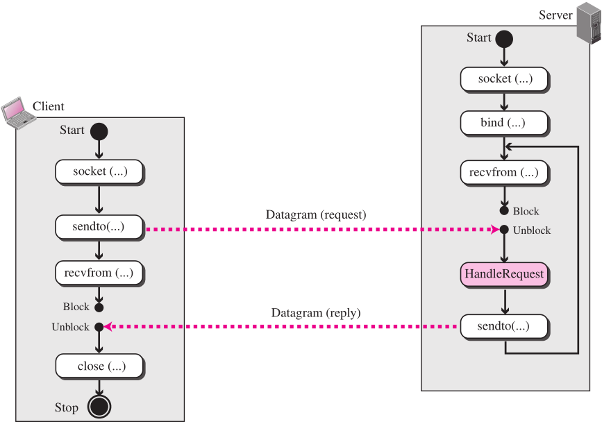
Interaksi Client/Server: TCP
Alur siklus hidup Socket TCP:
- Server: Membuat
serverSocketdan memanggillisten(). Tertidur menunggu diaccept(). - Client: Membuat socket. Memanggil
connect()(memicu TCP Handshake). - Server: Terbangun dari
accept()menghasilkanconnectionSocketbaru. - Client & Server: Bertukar data menggunakan
send()danrecv()tanpa perlu menempelkan IP tujuan lagi, karena pipa sudah terbentuk secara logikal.
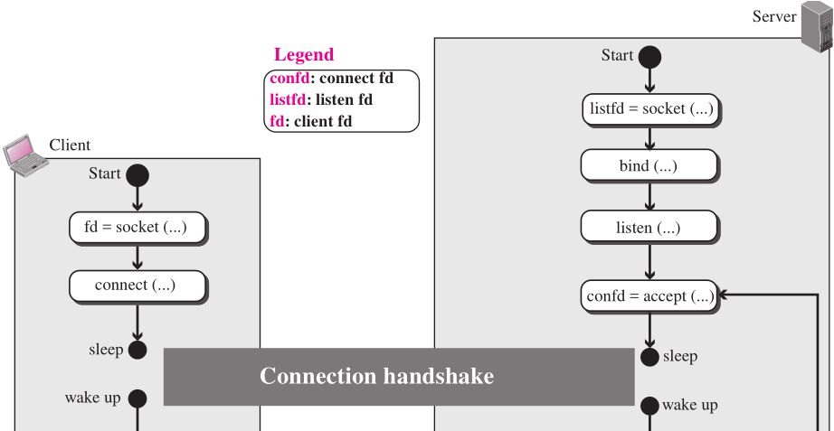
Bedah Kode: TCP Client (Python 3)
from socket import *
serverName = 'servername'
serverPort = 12000
# 1. Membuat TCP Socket (SOCK_STREAM)
clientSocket = socket(AF_INET, SOCK_STREAM)
# 2. Inisiasi Koneksi 3-way Handshake
clientSocket.connect((serverName, serverPort))
sentence = input('Input lowercase sentence:')
# 3. Mengirim data langsung ke dalam "pipa", tanpa target IP lagi
clientSocket.send(sentence.encode())
# 4. Menerima balasan
modifiedSentence = clientSocket.recv(1024)
print('From Server:', modifiedSentence.decode())
clientSocket.close()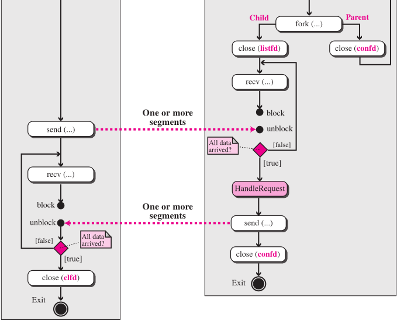
Bedah Kode: TCP Server (Python 3)
from socket import *
serverPort = 12000
serverSocket = socket(AF_INET, SOCK_STREAM)
serverSocket.bind(('', serverPort))
# 1. Mulai mendengarkan (Welcoming Socket)
serverSocket.listen(1)
print('The server is ready to receive')
while True:
# 2. Block/Tertidur sampai ada Klien masuk.
# Menghasilkan Socket BARU (connectionSocket) khusus klien ini.
connectionSocket, addr = serverSocket.accept()
# 3. Menerima data stream dari klien spesifik tersebut
sentence = connectionSocket.recv(1024).decode()
capitalizedSentence = sentence.upper()
# 4. Kirim balasan dan TUTUP connectionSocket klien ini.
# (serverSocket pembuka tamu TIDAK DITUTUP!)
connectionSocket.send(capitalizedSentence.encode())
connectionSocket.close()Socket Programming: Pengecualian & Timeout
Seringkali aplikasi jaringan harus menunggu berbagai kejadian (event), misalnya:
- Menunggu balasan dari socket lain.
- Menunggu waktu habis (timeout).
Fungsi seperti recv() bersifat Blocking. Jika tidak ada balasan dari seberang, program akan *freeze* selamanya. Solusinya adalah fitur Timeouts.
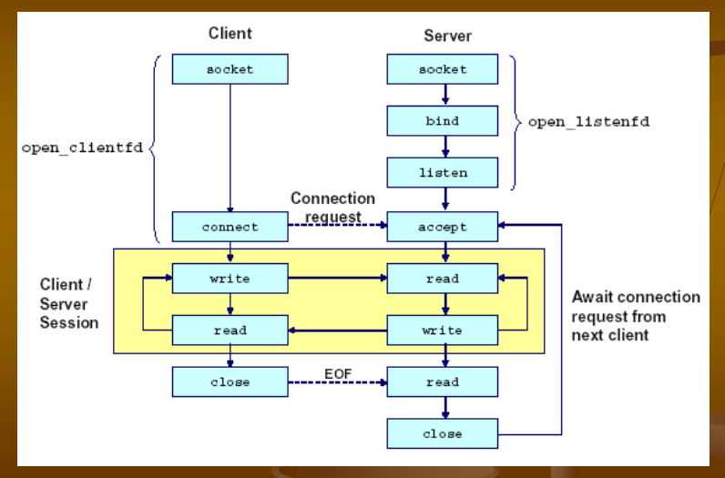
Menggunakan settimeout()
Di Python, kita dapat memasang "bom waktu" pada soket dengan perintah s.settimeout(10).
- Jika dalam 10 detik operasi
s.recv()tidak menerima byte apa pun, Python akan melemparkan sebuah interupsi Timeout Exception. - Timer akan berhenti otomatis jika paket diterima sebelum batas waktu habis.
- Setiap pengerjaan soket selanjutnya akan menuruti aturan 10 detik ini.
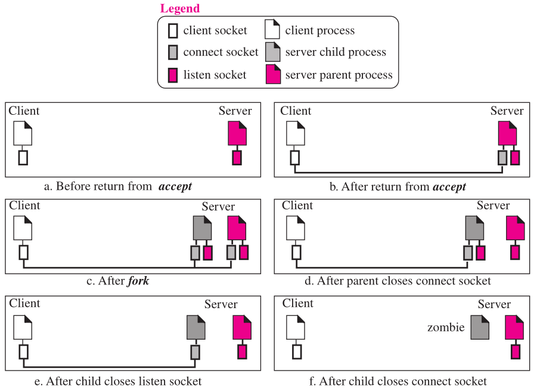
Menangani Eksepsi dengan Try-Except
Bagaimana cara Python menangkap lemparan interupsi tersebut agar program tidak "crash"?
try:
# Blok kode yang rawan bermasalah / melempar exception
pesan = clientSocket.recv(1024)
print(pesan)
except timeout:
# Apa yang dilakukan jika terbukti Waktu Habis?
print("Server diam saja! Waktu tunggu 10 detik habis.")
except Exception as e:
# Penanganan error lainnya
print("Terjadi error jaringan: ", str(e))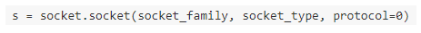
Contoh Kasus TCP Server Timeout (The Shepherd Boy)
Analoginya: Anak gembala (Klien) iseng terkoneksi ke Warga (Server) namun diam saja.
- Warga memberi batasan waktu 10 detik. Jika Anak gembala diam saja, timer akan membangkitkan exception.
- Warga hanya mentolerir 3 kali keisengan (counter < 3). Setelah 3 kali timeout, Warga (Server) memutus sambungan permanen selamanya.
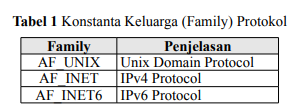
Implementasi The Shepherd Boy (TCPServer)
counter = 0
while counter < 3:
connectionSocket, addr = serverSocket.accept()
# Memasang "bom waktu" 10 detik khusus untuk koneksi anak gembala ini
connectionSocket.settimeout(10)
try:
wolf_location = connectionSocket.recv(1024).decode()
send_hunter(wolf_location) # Fungsi eksternal
connectionSocket.send('hunter sent')
except timeout:
# Jika anak gembala diam saja > 10 detik
counter += 1
print("Bocah iseng ketahuan!")
connectionSocket.close()Deep Dive: Anatomi Modul Socket Python
Mari kita bedah secara akademis perintah-perintah bawaan Python.
Fungsi Penciptaan: socket.socket(family, type)
family: Protokol apa yang dipakai?AF_INETuntuk Internet IPv4.AF_UNIXuntuk komunikasi internal OS (Unix Domain).
type: Jenis layanannya?SOCK_STREAMuntuk TCP.SOCK_DGRAMuntuk UDP.
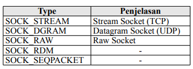
Fungsi Koneksi (connect)
Fungsi s.connect(address) digunakan oleh Klien untuk melakukan inisiasi.
- Parameter
addresspada protokol Internet (AF_INET) berbentuk **Tuple**, yakni pasangan(host, port). - Misal:
s.connect(("192.168.1.5", 8080)). - Untuk UNIX domain, address hanyalah sebuah string pathname (contoh:
"/tmp/my_socket").
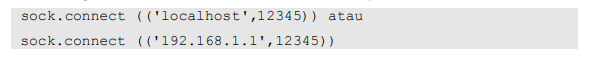
Fungsi Pengikatan (bind & listen)
Fungsi ini dieksekusi oleh Server.
s.bind(address): Mengikat socket ke sebuah port fisik mesin tersebut agar OS tahu bahwa traffic di port tersebut adalah milik program kita. Address berupa Tuple(host, port). Host bisa diisi string kosong''yang berarti mendengarkan semua kartu jaringan yang ada di mesin server.s.listen(queue): Mengubah socket menjadi pendengar (Welcoming Socket). Nilaiqueue(contoh: 1 atau 5) merepresentasikan maksimum antrian koneksi Klien di lobi yang menunggu di-accept oleh server.
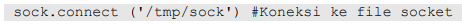
Fungsi Penerimaan (accept & send/recv)
s.accept(): Menahan laju program (blocking) sampai Klien terhubung. Mengembalikan nilai Tuple baru:(connectionSocket, addressKlien).s.send(bytes)(TCP) /s.sendto(bytes, address)(UDP): Mengirim urutan byte ke jaringan. Pastikan String diubah ke byte array via.encode()!s.recv(bufsize)(TCP) /s.recvfrom(bufsize)(UDP): Menerima maksimum ukuran penyangga (misal 1024 atau 2048 bytes) ke dalam RAM.
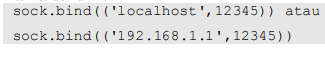
Rangkuman (Chapter 2 Summary)
Setelah menguasai Socket, kita telah menutup bab Application Layer dengan sempurna. Hal esensial yang kita pelajari:
- Protokol Request/Reply: Klien meminta info, Server merespons (biasanya dengan Status Code).
- Format Pesan: Headers (memberi instruksi metadata), dan Data/Payload.
- Tema Penting: Sentralisasi vs Desentralisasi (P2P), Stateless vs Stateful (HTTP vs FTP/TCP), Skalabilitas jaringan, dan keandalan (Reliable TCP vs Unreliable UDP).
"Complexity at the network edge!"
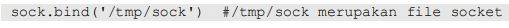
Galeri Ilustrasi Tambahan (1)
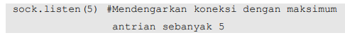
Galeri Ilustrasi Tambahan (2)
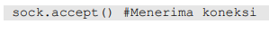
Galeri Ilustrasi Tambahan (3)
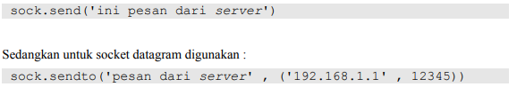
Galeri Ilustrasi Tambahan (4)
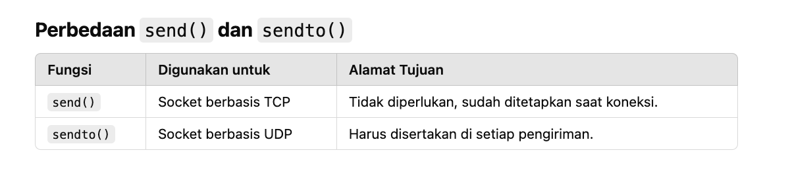
Galeri Ilustrasi Tambahan (5)
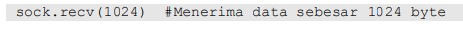
Galeri Ilustrasi Tambahan (6)
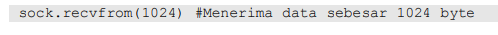
Galeri Ilustrasi Tambahan (7)
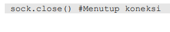